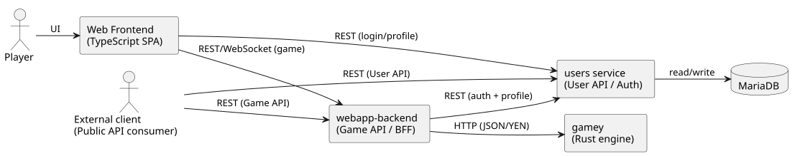
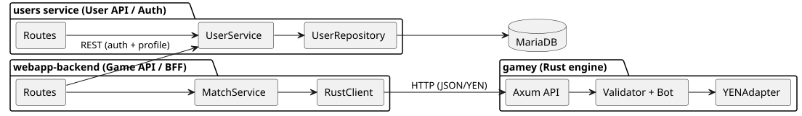
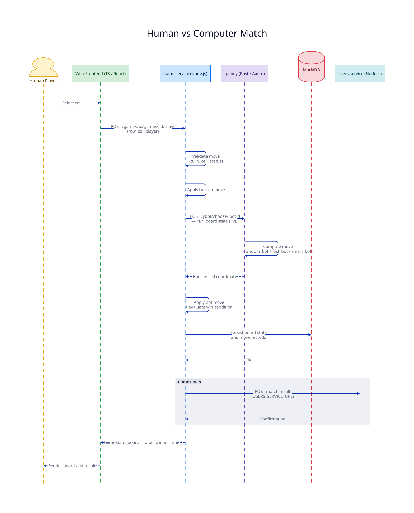
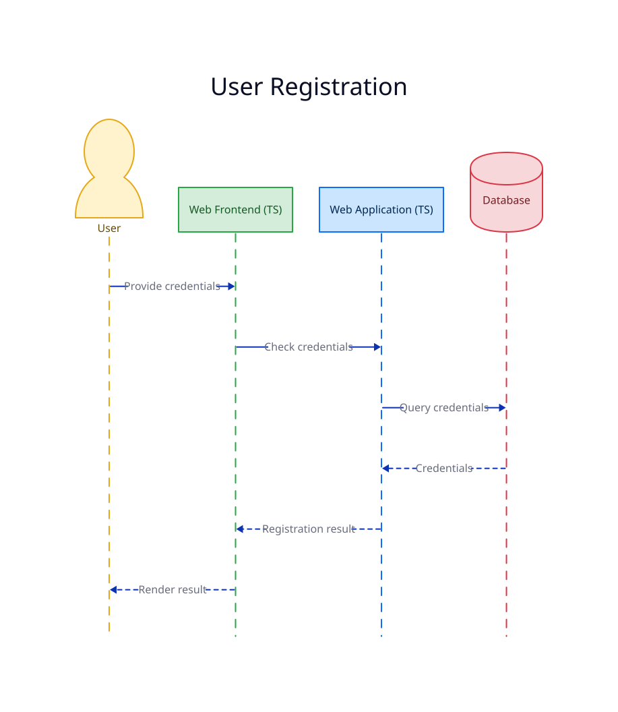
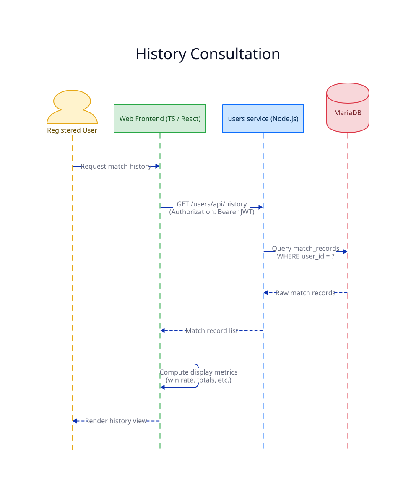
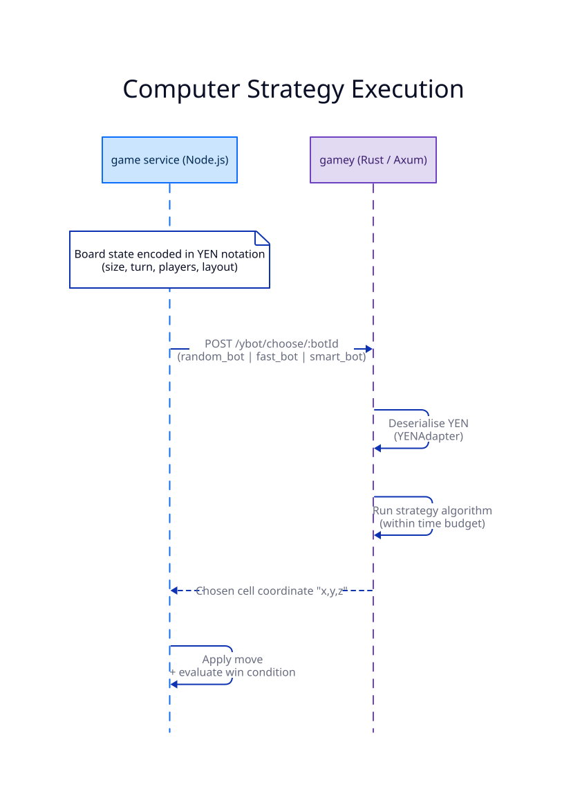
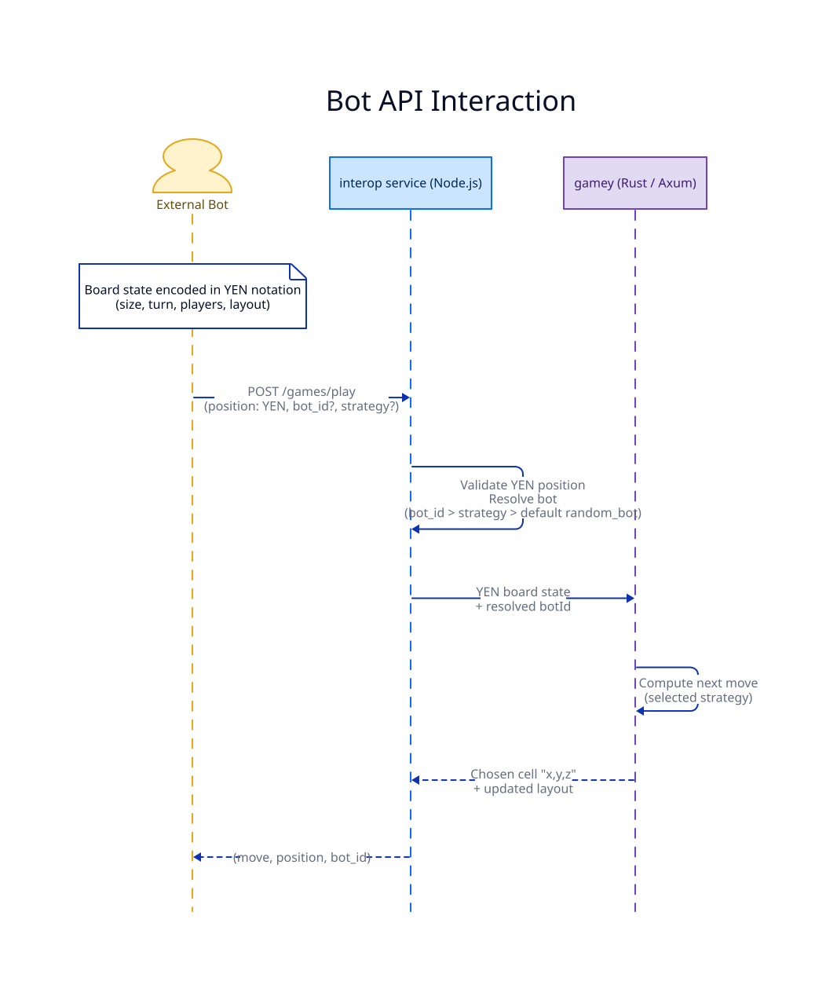
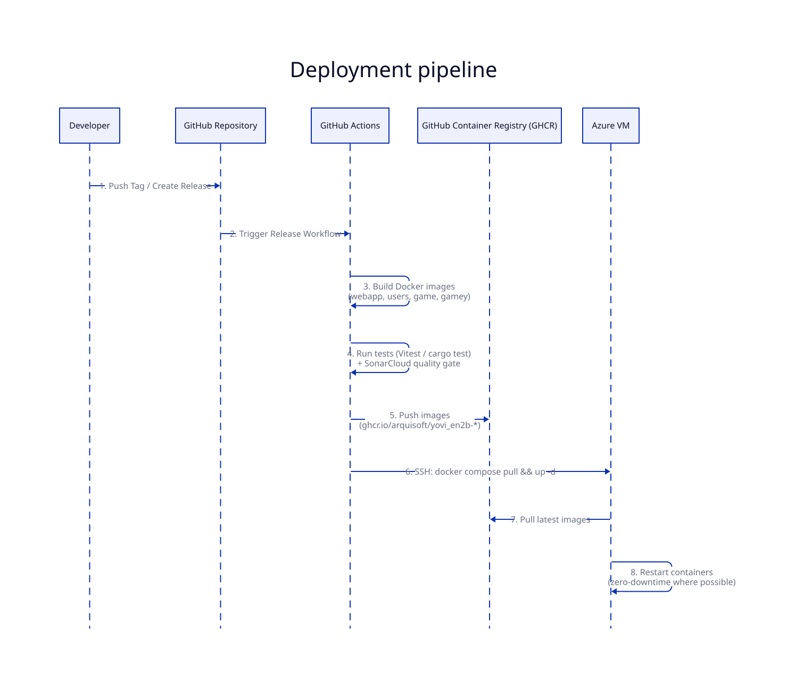
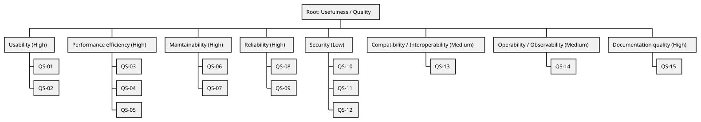

About arc42
arc42, the template for documentation of software and system architecture.
Template Version 8.2 EN. (based upon AsciiDoc version), January 2023
Created, maintained and © by Dr. Peter Hruschka, Dr. Gernot Starke and contributors. See https://arc42.org.
1. Introduction and Goals
The project that was proposed was implementing the "Game Y" (similar to the best-known board game "Hex"), all while mantaining a professional workflow simulating real life situations, covering all the aspects that could happen, these include:
-
Backend development
-
Frontend development
-
Management of the APIs
-
Overcome difficulties with new software
-
Quality control
If all of these are followed correctly the resulting project should go according to the theory.
1.1. Requirements Overview
-
The game will be available as a web application.
-
Players can register, log in, play matches, and have their results stored and accessible from their profile.
-
The game includes an AI opponent whose behavior depends on the selected difficulty, ranging from easy to hard.
1.2. Quality Goals
| Priority | Quality Goal | Scenario |
|---|---|---|
1 |
Usability |
A new player can register, log in, select a difficulty, and start a match against the bot in under 30 seconds without reading documentation. |
2 |
Performance |
For typical board sizes, bot move computation stays below 500 ms on "Hard" to keep gameplay fluid; worst cases must degrade gracefully (e.g., show a "thinking" state rather than freezing). |
3 |
Maintainability |
A new bot strategy or feature can be implemented and integrated in ⇐ 1 work day without breaking the existing frontend or any published API contract. |
4 |
Security |
Only authenticated users can submit results to their own profile; the system must prevent score spoofing attempts (e.g., forged results or manipulated game states). |
5 |
Reliability |
Game results are reliably persisted: at least 99% of save operations complete without data loss, and failures are reported explicitly (no silent loss). |
The top three (max five) quality goals for the architecture whose fulfillment is of highest importance to the major stakeholders. We really mean quality goals for the architecture. Don’t confuse them with project goals. They are not necessarily identical.
Consider this overview of potential topics (based upon the ISO 25010 standard):

You should know the quality goals of your most important stakeholders, since they will influence fundamental architectural decisions. Make sure to be very concrete about these qualities, avoid buzzwords. If you as an architect do not know how the quality of your work will be judged…
A table with quality goals and concrete scenarios, ordered by priorities
1.3. Stakeholders
| Role/Name | Contact | Expectations |
|---|---|---|
Project Sponsor (Micrati) |
Company (Micrati) |
Expects a working, publicly accessible web game with a clear architecture, documented APIs, and a deliverable aligned with the assignment scope and timeline. |
Project Supervisor (Teacher) |
Teaching Staff |
Expects a professional development workflow, clean and documented code, and fulfillment of all functional requirements (bot + web application). |
Development Team (Team) |
Team members |
Expect to learn new technologies (API management, frontend/backend), gain experience in professional workflows, and achieve a high grade. |
End Users (Players) |
Web |
Expect a functional and entertaining game, a challenging bot difficulty, and the ability to save their progress reliably. |
API Consumers (Bot developers / external clients) |
Public API |
Expect a stable and well-documented API contract, with clear error messages and examples. |
Quality Assurance (Team / reviewers) |
Team members |
Expect the code to be testable and the game to be free of critical bugs before deployment. |
2. Architecture Constraints
2.1. Technical Constraints
| Constraint | Background and/or Motivation |
|---|---|
Web-based Access |
The game must be accessible via a standard web browser (Chrome, Firefox, etc.) without requiring local installation. |
Public Deployment |
The application must be deployed and publicly accessible via the Web (academic delivery constraint). |
Backend/Frontend Separation |
The logic (APIs/services) and the presentation (UI) must be decoupled to keep clear client/server boundaries and enable independent development. |
Bot Implementation |
The system must include an algorithmic bot with selectable difficulty and/or multiple strategies (exact number of difficulty levels is not fixed). |
Persistence |
A database or persistent storage must be used to save player profiles and game history. |
YEN notation (JSON messages) |
Game state must be exchanged as JSON using YEN notation to ensure interoperability between modules. |
2.2. Organizational Constraints
| Constraint | Background and/or Motivation |
|---|---|
Team Structure |
Work is divided among students acting as a full-stack development team, requiring clear communication and task management. |
Deadline |
The project must be completed and documented within the academic semester timeframe. |
Technology adoption (learning curve) |
The project requires using technologies that are new to the team (e.g., Docker, TypeScript, Rust), which may affect planning and delivery. |
2.3. Conventions
| Constraint | Background and/or Motivation |
|---|---|
arc42 Documentation |
The software architecture must be documented using the arc42 template. |
Version Control |
Use of Git (e.g., GitHub or GitLab) is mandatory to track progress and manage collaborative code changes. |
YEN notation |
Use YEN notation in JSON messages whenever a game state is exchanged. |
3. Context and Scope
3.1. Business Context
The business context defines the external actors and how they interact with the YOVI system. The system exposes two public API surfaces (user management and game interaction) and delegates core game validation / bot move selection to the internal Rust engine.
| Communication Partner | Inputs | Outputs |
|---|---|---|
Human Player (Web client) |
Registration/login, game actions (moves), game configuration |
UI feedback, game state, personal profile and history |
External Client (Public User API consumer) |
Register/login, profile/history requests (JWT-based) |
JWT tokens, user/profile/history data |
External Client (Public Game API consumer) |
Game requests (create/join room, play), board state in YEN/JSON when required |
Game state updates, bot next move (when playing vs AI), error responses |
Operator (Project team / admin role) |
Service status queries (health) and basic operational requests |
Service status information and basic diagnostics |
3.1.1. Domain Interfaces
-
Web UI: React-based interface for end-user interaction.
-
Public User API: REST endpoints for registration/login and user profile/history.
-
Public Game API: REST endpoints to interact with the game (including playing against the bot using JSON/YEN).
3.2. Technical Context
The technical context describes the protocols and communication channels between services and external clients.
3.2.1. Technical Interfaces and Channels
| Interface | Channel / Protocol | Description |
|---|---|---|
Frontend ↔ Webapp-backend |
HTTP / REST |
The React application (Vite) communicates with the Node.js backend using REST endpoints. |
Frontend ↔ Webapp-backend (realtime) |
WebSocket |
Realtime channel used for gameplay/multiplayer events (when enabled). |
Webapp-backend ↔ gamey (Rust engine) |
HTTP / JSON (YEN) |
The Node.js service delegates game validation and bot move computation to the Rust engine. |
Webapp-backend ↔ users |
HTTP / REST |
Webapp-backend calls the users service for authentication/authorization and user-related operations. |
External clients ↔ users |
HTTP / REST |
Public user management API (register/login/profile/history). |
Users ↔ MariaDB |
MariaDB protocol |
Persistence of user data and credentials. |
3.2.2. Mapping of Inputs/Outputs to Channels
-
Access Management: Login/registration requests are handled by the Users service, which returns a JWT on success.
-
Move Processing: Game flow uses REST and/or WebSockets from client to Webapp-backend; bot move/validation is delegated to gamey via HTTP using JSON/YEN.
-
Persistence: User data and history are persisted in MariaDB via the Users service; additional persistence responsibilities are TBD (if introduced later).
4. Solution Strategy
The architecture of the YOVI system follows a modular client/server approach that separates the user interface from backend services and the core game engine. This strategy supports maintainability and interoperability by keeping clear boundaries between UI, user management, and game logic. The system exposes public APIs for user management and game interaction, while the Rust game engine remains internal and focused on validation and bot move computation.
4.1. Technology decisions
The web client is implemented in TypeScript to enable fast development of an interactive UI using modern web frameworks. Backend services are implemented as HTTP APIs, and the game engine is implemented in Rust for performance and memory safety when running validation and search-based bot strategies. Inter-service communication uses JSON and the YEN notation as the game-state contract.
4.2. Quality Goal Realization
Correctness and reliability are improved by enforcing game rules and validating YEN/JSON game states in the Rust engine. Usability is addressed through a simple web-based flow (register/login/start game) and a clear UI. Performance is addressed by using a compiled Rust engine for the computationally intensive bot logic and by keeping service calls bounded (timeouts) to avoid hanging requests. Maintainability is supported by the separation into services (webapp-backend, users, gamey) and stable API contracts between them. Security is handled through JWT-based authentication and role-based authorization (player/admin) for protected operations.
4.3. Organizational decisions
The system is developed by a four-member team with shared responsibilities across the stack. Version control and issue tracking support collaborative work and code quality through reviews and automated checks.
5. Building Block View
5.1. Whitebox Overall System

- Rationale
-
We applied functional decomposition to separate responsibilities within the YOVI system and keep clear client/server boundaries.
- Contained Blackboxes
| Building Block | Description |
|---|---|
Web Frontend |
Browser-based TypeScript application. Renders the Y game board, handles user interaction, and communicates with the public APIs via REST (and WebSockets when realtime gameplay is enabled). |
webapp-backend (Game API / BFF) |
Node/TypeScript service exposing the public Game API (match flow, play actions, game-related statistics). Orchestrates calls to |
users service (User API / Auth) |
Service exposing the public User API (register/login/profile). Issues and verifies JWTs, applies basic authorization (roles), and is the only component that accesses MariaDB. |
gamey (Rust engine) |
Rust service responsible for validating game states and computing the next move. Uses YEN notation for board representation and exposes a minimal JSON-based web service interface to |
Database (MariaDB) |
Persistent storage for user accounts and credentials/roles. Accessed exclusively by the |
Player (external) |
Human user interacting through the Web Frontend to play matches and manage their account. |
External client (external) |
Any third-party client consuming the public APIs (User API and/or Game API) over HTTP, e.g., automated gameplay clients. |
5.2. Level 2

5.2.1. Level 2 - webapp-backend (Game API / BFF)
| Building Block | Description |
|---|---|
Routes |
Single entry point for the public APIs exposed by |
MatchService |
Encapsulates game workflow logic: creating matches/rooms, updating board states, and coordinating validation and next-move computations. Calls |
RustClient |
HTTP client responsible for invoking the |
5.2.2. Level 2 - users service (User API / Auth)
| Building Block | Description |
|---|---|
Routes |
Handles HTTP requests entering the User API. Delegates to UserService. |
UserService |
Business logic for authentication and user operations (issue/verify JWTs, profile management, role checks). Coordinates persistence via UserRepository. |
UserRepository |
Persistence component managing user accounts and credentials/roles (create, read, update, delete). Accessed exclusively via UserService. |
5.2.3. Level 2 - gamey (Rust engine)
| Building Block | Description |
|---|---|
Axum API |
Minimal internal HTTP interface invoked by |
YENAdapter |
Parses and serializes YEN/JSON game states and converts them to/from internal board representation. |
Validator + Bot |
Enforces game rules and computes next moves. |
6. Runtime View
The runtime view describes the behaviour and interactions of the system’s building blocks through
selected scenarios. It captures how the TypeScript services (game, users) and the Rust engine
(gamey) cooperate to fulfil the requirements.
6.1. Human vs Computer Match
This scenario references the high-level requirement: Classic version of Game Y, player-vs-machine mode. It covers the complete server-side round trip that occurs when a human player makes a move in a PvE game session.
6.1.1. Quality Context
Source |
Human Player |
Stimulus |
Selects a position on the board via the Web Frontend |
Artifact |
System ( |
Environment |
Normal operation, active PvE game session |
Response |
The move is validated, the bot responds, the state is persisted, and the full updated board is returned to the frontend in a single round trip |
Response Measure |
The UI reflects the new state (human move + bot move) in under 500 ms
for medium difficulty ( |
6.1.2. Interaction sequence

1. The User selects a cell on the board via the Web Frontend.
2. The Frontend sends POST /game/api/games/{id}/move to the game service with { row, col, player }.
3. The game service validates the move: it checks that the game is active, the player’s turn is
correct, and the target cell is unoccupied. A 409 Conflict is returned immediately if any check
fails.
4. The game service applies the human player’s move to the in-memory board state.
5. In PvE mode, the game service encodes the updated board in YEN notation and calls gamey
(POST /ybot/choose/{botId}) to obtain the bot’s response. The bot identifier is determined by the
session’s configured difficulty level: random_bot (easy), fast_bot (medium), or smart_bot
(hard).
6. gamey computes the next move using the selected strategy within its time budget and returns
the chosen cell coordinate.
7. The game service applies the bot’s move to the board state and evaluates the win condition.
8. The game service persists the updated board state, current turn, winner (if any), and both
move records to MariaDB.
9. If the game has ended, the game service posts the match result to the users service
(via USERS_SERVICE_URL) so that it is recorded in the match_records table.
10. The game service returns the complete, updated GameState JSON — containing the post-bot-move
board, status, winner, and timer — to the Frontend in a single HTTP response.
11. The Frontend renders the new board state and displays the game result or continues awaiting the next player input.
6.2. User Registration and History Consultation
This scenario references the high-level requirement: Users will be able to register and consult their participation history. It describes how a user creates an account and later views their match statistics.
6.2.1. Quality Context
Source |
Human Player |
Stimulus |
Provides registration details via the Web Frontend; later requests their match history |
Artifact |
System ( |
Environment |
Normal operation |
Response |
The user account is created and a session is established; history is retrieved from persistent storage and rendered |
Response Measure |
Both operations complete and the UI reflects the new state in under 500 ms |
6.2.2. Interaction sequence
 Figure 1. User registration
|
 Figure 2. History consultation
|
1. The User provides registration credentials (username, e-mail, password) via the Web Frontend.
2. The Frontend sends POST /users/api/auth/register to the users service.
3. The users service validates the input, hashes the password with bcrypt, and writes the new
account to the users table in MariaDB.
4. The users service returns the created user object and a JWT to the Frontend, which stores the
token for subsequent authenticated requests.
5. When the registered User later requests their match history, the Frontend sends an authenticated
request to the users service.
6. The users service queries the match_records table in MariaDB for all records belonging to
the authenticated user.
7. The users service returns the raw match records (opponent, result, duration, timestamp) to
the Frontend.
8. The Frontend computes summary metrics (win rate, total games, etc.) and renders the history view.
6.3. Computer Strategy Execution
This scenario references the high-level requirement: The game against the computer must implement
more than one strategy, and the user shall be able to select which strategy to use.
It describes how the game service and gamey cooperate to produce the bot’s response move.
6.3.1. Quality Context
Source |
|
Stimulus |
The human move has been applied; the |
Artifact |
|
Environment |
Normal operation |
Response |
|
Response Measure |
p95 ≤ 500 ms for |
6.3.2. Interaction sequence

1. After applying the human move, the game service encodes the current board state in YEN
notation ({ size, turn, players, layout }).
2. The game service sends POST /ybot/choose/{botId} to gamey, where botId is one of:
random_bot (easy), fast_bot (medium, 500 ms budget), or smart_bot (hard, up to 3 000 ms
budget).
3. gamey deserialises the YEN payload via its YENAdapter and invokes the corresponding
strategy algorithm. fast_bot and smart_bot use minimax with alpha-beta pruning and iterative
deepening; random_bot selects a uniformly random legal cell.
4. gamey returns the chosen move as a barycentric coordinate string ("x,y,z") to the game
service.
5. The game service applies the bot’s move and continues with win detection and state
persistence (see Human vs Computer Match, steps 7–11).
6.4. External Bot Interaction
This scenario references the high-level requirement: The API will enable a bot to play against the application. A 'play' method will be exposed, requiring at least one 'position' parameter indicating the board state in YEN notation. It describes how a third-party bot interacts with the system through the interop service.
6.4.1. Quality Context
Source |
External Bot |
Stimulus |
Invokes |
Artifact |
interop service + |
Environment |
Normal operation |
Response |
The system validates the YEN position, computes the bot’s next move via |
Response Measure |
The interop service returns the response in YEN notation within the
configured timeout (2 s for |
6.4.2. Interaction sequence

1. The External Bot calls POST /games/play on the interop service with the request body
{ position: YEN, bot_id?, strategy? }.
2. The interop service validates the position field (structure, size, layout consistency). A
400 INVALID_POSITION error is returned immediately if the YEN object is malformed.
3. The interop service resolves the target bot: bot_id takes priority over strategy; if
neither is supplied, random_bot is used as the default.
4. The interop service forwards the YEN board state to gamey to compute the bot’s move.
5. gamey calculates the next move using the resolved strategy and returns the chosen cell
coordinate.
6. The interop service constructs the response { move: "x,y,z", position: updatedLayout, bot_id }
and returns it to the External Bot. The position field in the response contains the updated YEN
layout string after the bot’s move has been applied.
7. Deployment View
The deployment view describes the physical environment in which the YOVI system executes and the automation processes that manage its lifecycle.
7.1. Infrastructure Level 1: Cloud Environment
The system is deployed on Microsoft Azure using the "Azure for Students" subscription. A virtual machine with the following profile was provisioned, balancing performance against cost:
-
Location: France Central
-
Operating System: Linux Ubuntu
-
Hardware Profile: Standard B2ats v2 (2 vCPUs, 1 GiB memory)
7.2. Infrastructure Level 2: Execution Environment (Docker)
The system follows a "Cattle not Pets" approach, using Docker containers coordinated by Docker Compose to ensure consistency between development and production environments.
| Container | Technology | Port | Responsibility |
|---|---|---|---|
|
Nginx + React 18 (TypeScript, Vite) |
80 / 443 |
Serves the React SPA as static files and acts as the Nginx reverse proxy, routing
|
|
TypeScript / Node.js 22 (Express, TypeORM) |
3000 |
Authentication, user profiles, match history, and ranking. Manages the |
|
TypeScript / Node.js 22 (Express, TypeORM) |
5000 |
Game session management, move validation, bot orchestration, and timer enforcement. Manages the
|
|
Rust (Axum) |
4000 (internal only) |
Bot AI engine. Computes the next move for a given YEN board position using the configured strategy (random_bot, fast_bot, smart_bot). Never directly reachable from the browser. |
|
MariaDB 11.4 |
3306 (internal only) |
Persistent storage for all application data. Both |
|
Prometheus |
9090 |
Metrics collection. Scrapes the |
|
Grafana |
9091 (host) → 3000 (container) |
Metrics visualisation dashboards, pre-provisioned via the |
7.3. Network and Connectivity
The Virtual Machine is configured with a public IP and specific inbound port rules:
-
Port 80 / 443: Public HTTPS access, handled by Nginx inside the
webappcontainer. Nginx proxies all API traffic to the internal services:-
/users/→usersservice on port 3000 -
/game/→gameservice on port 5000 -
/grafana→ Grafana on port 3000 (container-internal) -
/prometheus→ Prometheus on port 9090
-
-
Port 9090: Direct access to Prometheus metrics (restricted in production).
-
Port 9091: Direct access to Grafana dashboards (restricted in production).
-
Port 22: SSH access, restricted to the CI/CD deployment pipeline.
-
Ports 3000, 4000, 5000, 3306: Internal to the Docker network (
monitor-net); not publicly routed.
7.4. Deployment Pipeline (CI/CD)
The system uses GitHub Actions for continuous delivery. The pipeline is triggered automatically when a new release is created or a version tag is pushed to the repository.

-
Automation: Workflow configuration is stored as YAML files in
.github/workflows. -
Build and Test: Docker images are built for all services; unit, integration, and SonarCloud quality-gate checks are executed.
-
Artifact Management: Docker images are pushed to the GitHub Container Registry (GHCR) under the
ghcr.io/arquisoft/yovi_en2b-*namespace. -
Deployment: GitHub Actions SSHs into the Azure VM and executes
docker compose pull && docker compose up -dto update all running containers with the latest images. -
Secrets Management: Sensitive values (SSH keys, DB passwords, JWT secret, MariaDB credentials) are stored as GitHub Actions Secrets and injected as environment variables at runtime; they are never committed to the repository or baked into images.
7.4.1. Documentation Deployment
Following the "Documentation as Code" principle, the arc42 documentation is automatically built and published.
-
Automation: A dedicated GitHub Action tracks changes in the
docs/directory. -
Build Process: The action runs
npm installandnpm run build, generating an HTML version from the AsciiDoc source files using Asciidoctor with diagram support. -
Publication: The build artefact is pushed to the
gh-pagesbranch via thegh-pagesnpm package and served via GitHub Pages.
8. Cross-cutting Concepts
This section describes overall, principal regulations and solution ideas that are relevant in multiple parts (= cross-cutting) of your system. Such concepts are often related to multiple building blocks. They can include many different topics, such as
-
models, especially domain models
-
architecture or design patterns
-
rules for using specific technology
-
principal, often technical decisions of an overarching (= cross-cutting) nature
-
implementation rules
Concepts form the basis for conceptual integrity (consistency, homogeneity) of the architecture. Thus, they are an important contribution to achieve inner qualities of your system.
Some of these concepts cannot be assigned to individual building blocks, e.g. security or safety.
The form can be varied:
-
concept papers with any kind of structure
-
cross-cutting model excerpts or scenarios using notations of the architecture views
-
sample implementations, especially for technical concepts
-
reference to typical usage of standard frameworks (e.g. using Hibernate for object/relational mapping)
A potential (but not mandatory) structure for this section could be:
-
Domain concepts
-
User Experience concepts (UX)
-
Safety and security concepts
-
Architecture and design patterns
-
"Under-the-hood"
-
development concepts
-
operational concepts
Note: it might be difficult to assign individual concepts to one specific topic on this list.

See Concepts in the arc42 documentation.
8.1. YEN — Game State Format
- Purpose
-
A shared format for representing a Game Y board at a specific point in time. Used as the data contract between the
gameservice andgamey. - Format
-
The game state is encoded as JSON following YEN notation.
{
"size": 4,
"turn": "R",
"players": [ "B", "R" ],
"layout": "B/.B/RB./B..R"
}- Rules
-
-
size: integer greater than 0. -
turn: must be one of the player IDs listed inplayers. -
players: list of player identifiers (currently"B"and"R"). -
layout: board encoded as a string;/separates rows,.marks an empty cell. -
Invalid states are rejected with a 4xx error.
-
- Compatibility
-
-
One version of the API is published. Any breaking change must be reflected in the documentation and contract tests.
-
8.2. REST Conventions
- Scope
-
-
Browser →
usersservice (authentication, stats, ranking) -
Browser →
gameservice (game sessions and moves) -
gameservice →gamey(bot move requests, internal only)
-
- Conventions
-
-
JSON is the default payload format.
-
HTTP status codes: 2xx for success, 4xx for client errors, 5xx for server errors.
-
Calls from
gametogameymust use finite timeouts. -
Non-idempotent operations are not retried automatically.
-
Recommended headers:
Content-Type: application/json,Accept: application/json.
-
8.3. Authentication
- Scope
-
All endpoints exposed by
users(registration, login, profile) andgame(game sessions and moves). - How it works
-
-
usersissues JWTs signed with HS256. Clients send them asAuthorization: Bearer <token>. -
gameandusersshare the same secret key and verify tokens locally — no inter-service call is made per request. -
gameendpoints use optional authentication: requests without a token are accepted as guest sessions; requests with an invalid or expired token are rejected with 401.
-
- Authorization
-
-
Role-based:
playerandadmin. A user can only read or modify their own data by default.
-
8.4. Service Routing and Orchestration
- How requests flow
-
-
Nginx is the single public entry point. It routes requests by path prefix:
/users/→ users service,/game/→ game service,/→ SPA static files. -
The
gameservice is the only component that callsgamey. The browser never reaches the bot engine directly, and its port is not exposed through Nginx. -
This keeps game logic and bot calls on the server side, preventing clients from interfering with game state.
-
8.5. Development Workflow
- Rules
-
-
Short-lived branches merged into master via Pull Request.
-
Each PR requires at least one human approval and a passing CI run before merging.
-
PRs are merged using squash merge to keep a linear history.
-
No feature flags — changes go straight to master once approved.
-
8.6. User Experience (UX)
- Goals
-
-
Players should be able to start a game with as little friction as possible.
-
The UI must give clear feedback at every step, especially when waiting for the bot.
-
- Key principles
-
-
Guest-first access — Players can start a game without registering. An account is only required to save match history and appear in the ranking. This lowers the barrier to try the game.
-
Server-authoritative rendering — The board state shown to the player always comes from the server. The UI does not maintain its own copy of the game logic; it only renders what the
gameservice returns. This keeps the frontend simple and prevents the display from going out of sync. -
Visible bot feedback — When the bot is computing a move (which can take up to 3 seconds on large boards), the UI shows a "thinking…" indicator. The player cannot interact with the board during this time. This avoids confusion about whether the game is frozen.
-
Accessible components — UI primitives are built with Radix UI, which provides keyboard navigation and screen-reader support out of the box.
-
8.7. Configuration and Secrets
- Rules
-
-
All environment-specific configuration is injected via environment variables (Docker Compose locally, GitHub Secrets in CI).
-
Sensitive values (JWT key, database password) are never committed to the repository and never baked into container images. Local development uses a gitignored
.envfile. -
Secrets must never appear in logs.
-
9. Architecture Decisions
9.1. ADR-001: Dedicated game service owns all session state
| Field | Description |
|---|---|
Status |
APPROVED |
Context |
Game session state (board, turns, moves, timers) must live on the server to prevent cheating and keep the browser thin. We needed to decide which component owns this state. |
Decision |
A dedicated |
Consequences |
Clear ownership of game logic; the browser cannot modify game state directly. Adding game features means touching the |
9.2. ADR-002: Nginx as single public entry point with path-based routing
| Field | Description |
|---|---|
Status |
APPROVED |
Context |
The system has two backend services and a frontend SPA. Clients need a single address to reach all of them. |
Decision |
Nginx routes requests by path prefix: |
Consequences |
One public entry point with simple routing rules. The bot engine stays internal. Adding a new service requires a new Nginx route. |
9.3. ADR-003: Shared JWT secret with local token verification
| Field | Description |
|---|---|
Status |
APPROVED |
Context |
Both |
Decision |
|
Consequences |
No extra round-trip for authentication. The shared secret must be identical across both services and kept confidential. |
9.4. ADR-004: One MariaDB instance with strict table ownership per service
| Field | Description |
|---|---|
Status |
APPROVED |
Context |
Both services need persistent storage. Running two separate database instances adds operational overhead for an academic project. |
Decision |
Both services connect to the same MariaDB instance ( |
Consequences |
One database container to manage. The services remain logically independent as long as table boundaries are respected. |
9.5. ADR-005: Stateless bot engine (gamey)
| Field | Description |
|---|---|
Status |
APPROVED |
Context |
The bot only needs the current board position to compute a move. Storing session state in the Rust service would complicate deployment and testing. |
Decision |
|
Consequences |
Simple deployment and testing for the Rust service. The |
9.6. ADR-006: HS256 for JWT signing
| Field | Description |
|---|---|
Status |
APPROVED |
Context |
|
Decision |
Use HMAC-SHA256 (HS256) with a shared secret for JWT signing and verification. |
Consequences |
Simple setup and fast verification. Asymmetric keys are not needed since both services are internal and controlled by the same team. |
9.7. ADR-007: Secrets and configuration via environment variables
| Field | Description |
|---|---|
Status |
APPROVED |
Context |
Sensitive values (JWT key, database password) must not be stored in the repository or baked into container images. |
Decision |
All sensitive configuration is injected at runtime via environment variables. Locally, a gitignored |
Consequences |
Secrets never enter version control. Developers must copy |
10. Quality Requirements
10.1. Quality Tree

10.2. Quality Scenarios
This section makes quality requirements concrete through a quality tree and measurable scenarios, referencing the quality goals defined in section 1.2 Quality Goals where applicable. The quality-attribute taxonomy follows ISO/IEC 25010. Scenarios make quality requirements precise by stating stimulus, response, and measurable criteria.
| ID | Type | Stimulus | Response | Measure / Acceptance criteria |
|---|---|---|---|---|
Usage |
A new player accesses the application for the first time. |
They can register, log in, and start a game against the bot. |
Completes the flow in < 30 s without needing instructions (quality goal 1). |
|
Usage |
A player starts a game and makes a move. |
The UI reflects the new state without noticeable delay. |
Main interaction (render + confirmation) does not exceed 500 ms on the client (TBD: to be measured). |
|
Usage |
A standard request to the Node.js backend (e.g., login, profile) that does not involve the bot engine. |
The system responds with the result. |
p95 ⇐ 50 ms for ~10 concurrent users (internal target). |
|
Usage |
The |
It receives a status response and can disable bot features if the engine is down. |
p95 ⇐ 50 ms. |
|
Usage |
A player requests the next bot move (random strategy or minimax with alpha-beta pruning). |
The service returns a valid move. |
|
|
Change |
A new bot strategy or difficulty level is added to the Rust module. |
The feature is integrated without breaking the frontend or API contracts. |
Effort ⇐ 1 work day; the |
|
Change |
Board-size support is extended within the allowed range. |
The change does not require rewriting the UI or the persistence layer. |
Changes are localized and tests are updated; the YEN format is not broken. |
|
Usage |
A game ends and the result is saved to the database. |
The result is persisted and appears in the user’s history. |
99% of save operations succeed (quality goal 4); on failure, an explicit error is returned and no match is falsely confirmed as saved. |
|
Usage |
The server restarts unexpectedly. |
The system comes back online and retains previously persisted data. |
Service recovers after restart (TBD: ⇐ 5 min); live sessions in progress may be lost, but finished match records are kept. |
|
Usage |
An unauthenticated client tries to submit a match result or access private data. |
The backend rejects the request. |
Only authenticated users can submit results linked to their own account (quality goal 5). |
|
Usage |
An authenticated user attempts to submit a result without having played, or sends a manipulated game state to obtain an illegitimate score. |
The |
Both spoofing scenarios are prevented (quality goal 5). |
|
Usage |
A client attempts brute force or spam against the |
The system limits and logs the requests. |
Rate limiting is enabled (TBD: thresholds per IP/user) and security events are logged. |
|
Usage |
A third party builds a bot using the public interoperability API. |
They can integrate without reverse engineering the system. |
The API is fully documented (OpenAPI/Swagger with examples) as required by the assignment. |
|
Usage |
An error occurs during a match or latency increases. |
The team can diagnose the issue using metrics and logs. |
Basic metrics (p95 latencies, error rate, bot engine health) are available; logs include a correlation ID (TBD implementation). |
|
Change |
The team reviews the architecture and its decisions. |
They can trace decisions and quality attributes without ambiguity. |
Complete arc42 documentation with relevant ADRs recorded per evaluation criteria. |
11. Risks and Technical Debts
This section lists identified technical risks and technical debts, ordered by priority.
11.1. Technical Risks
| ID | Priority | Impact | Mitigation |
|---|---|---|---|
R-01 (Minimax does not scale beyond board size 11) |
HIGH |
The current minimax implementation (alpha-beta pruning + iterative deepening) cannot handle boards of size 11+ within acceptable time limits, which restricts the variable board size requirement. |
|
R-02 (Bot engine failure blocks PvE games) |
HIGH |
If |
|
R-03 (WebSocket integration is unproven) |
HIGH |
The team has not yet implemented WebSocket support for real-time online multiplayer. Lack of experience increases the risk of bugs or incomplete implementation. |
|
R-04 (Limited observability in production) |
HIGH |
Without structured logs and metrics, diagnosing problems on the deployed server is difficult and slow. |
|
R-05 (Team inexperience with the stack) |
MEDIUM |
The team is relatively new to some parts of the stack (React, Node.js, Rust), which may slow development and increase the bug rate. |
|
R-06 (Scope creep from optional features) |
MEDIUM |
The assignment includes many optional features (game variants, i18n, mobile, undo, hints, etc.). Taking on too many risks overcommitment. |
|
R-07 (Documentation has open TBD sections) |
MEDIUM |
Some documentation sections still contain TBD placeholders, which may affect the final evaluation. |
|
11.2. Technical Debt
| ID | Debt | Impact / Plan |
|---|---|---|
TD-01 (SonarQube slows development) |
Quality gates are enabled and catch issues early, but they add overhead to the development workflow. |
|
TD-02 ( |
The |
|
TD-03 ( |
The online multiplayer mode ( |
|
12. Glossary
| Term | Definition |
|---|---|
YOVI |
System name: a web-based platform to play Game Y through a browser and public APIs. |
Game Y |
The board game implemented by the system: players compete to connect three sides of a triangular board. |
Micrati |
Company behind the project in the assignment context (project sponsor). |
SPA (Single-Page Application) |
Web application that loads once and updates the UI dynamically by calling backend APIs. |
Web Frontend |
Browser-based TypeScript SPA that renders the board and interacts with backend services via HTTP. |
users (service) |
Service responsible for authentication and user management. Exposes the public User API (register, login, profile, stats, ranking) and persists user data in MariaDB. |
game (service) |
Service responsible for all game session logic. It validates moves, manages board state, calls |
gamey (Rust engine) |
Internal Rust service that computes bot moves. Accepts a board position in YEN format and returns one move. Invoked only by the |
interop (service) |
Standalone service that exposes a public API allowing external bots or clients to play against the bot engine. Required by the assignment for interoperability with other teams. Implemented but not yet connected in |
User API |
Public HTTP API for user management (register, login, profile, history) provided by the |
Game API |
Public HTTP API for game interaction (create session, play moves, surrender) provided by the |
YEN |
Notation for representing a Game Y board state: includes board size, current player turn, player identifiers, and the board layout. |
YEN/JSON game state |
A JSON payload encoding a game state in YEN format. Invalid states are rejected by the engine. |
JSON |
Default payload format used in all API and service-to-service communication. |
REST |
HTTP-based request/response style used across all services in the system. |
WebSocket |
Bidirectional communication channel planned for real-time online multiplayer. |
JWT (JSON Web Token) |
Token format used for authentication. Clients send it in the |
HS256 |
HMAC-SHA256 algorithm used to sign and verify JWTs using a shared secret key. |
Authentication |
The process of verifying who a user is. Handled by the |
Authorization |
The process of deciding what a user is allowed to do. Implemented as role-based checks ( |
MariaDB |
Relational database used by both the |
ADR (Architecture Decision Record) |
Short document describing an important architectural decision, its context, and its consequences. |
arc42 |
Software architecture documentation template used to structure this documentation (sections 1–12). |
M1 |
First project milestone, focused on delivering end-to-end functionality. |
Error envelope |
Standard JSON structure for error responses, using |
requestId |
Identifier included in error responses to help correlate client-visible failures with server-side logs. |